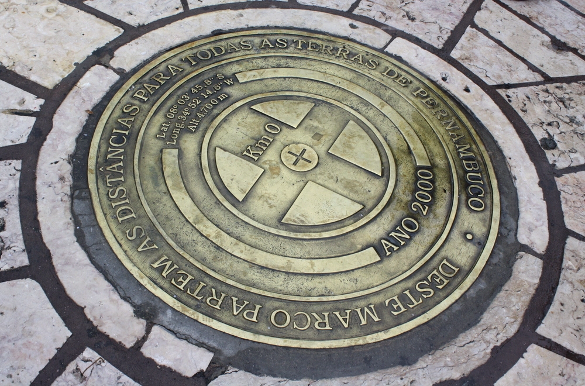

Marco Zero, Praça Rio Branco ou Recife Antigo fica localizado no Bairro do Recife que é o Centro
Histórico da cidade.
A partir deste marco é realizado todas as medidas oficiais de distâncias rodoviárias.

A placa foi doada pelo Automóvel Clube de Pernambuco à cidade de Recife em 31 de janeiro de 1938. 